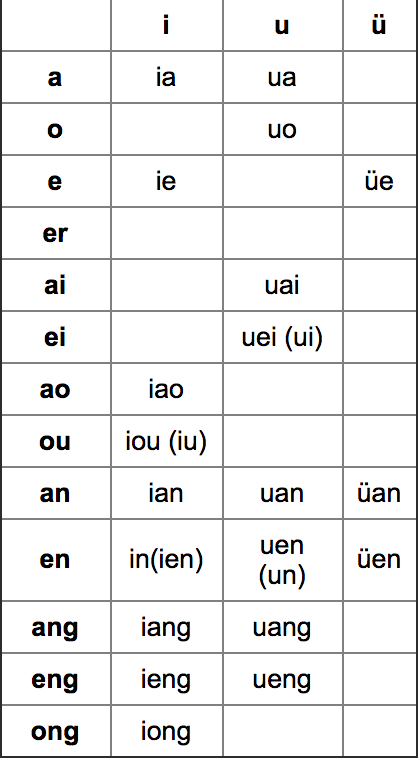

Designed in the People’s Republic of China during the mid-1950s, pinyin is a phonetic system of the Chinese language. It adopts the roman alphabet to represent phonetic sounds in Mandarin Chinese. There have been many different systems of transcription used for learning Chinese pronunciation. Whereas China’s capital was once called “Peking” in English, using pinyin it is now written “Beijing”
Tones
In Chinese the variation of a syllable’s pitch may distinguish meaning. There are four tones, indicated respectively by the following tone marks:
The first tone is high in pitch and even.
The second tone is the rising tone, starting from a high pitch and rising briefly.
The third tone is a falling rising tone.
The fourth tone is a falling tone, starting high and descending briefly.
There is also a neutral tone. It is short and unaccented. Its pitch relies on a natural extension of the preceding tone. It is conveyed by the absence of a sign.
Having a good pronunciation depends greatly on getting the tones right. Of all the difficulties found in learning Chinese, the problem of tones is undoubtedly the most difficult.
Pinyin Alphabet
Initials
There are 21 initials in Chinese and 12 of them have almost the same pronunciation as English.
m, f, n, l, h, and sh are pronounced as in English
d like “t” in “straight”(unaspirated)
j like “g” in “genius” (unaspirated)
z like “ds” in “beds”
zh like “j” in job
b like “p” in “spin” (unaspirated)
g a soft unaspirated “k” sound
x like “sh” in “sleep” but with the corners of the lips drawn back
r somewhat like “ge” in lodge
There is some special attention to be paid on the so called “aspirated” consonants. It is necessary to breath heavily after the original consonant is sounded:
p = p'(like in “pop”)
q = ch harder than “ch” in cheap
t = t’ (like in “tap”)
c = ts’ (like in “cats”), with aspiration
k = k’ (like in “kangaroo”)
ch = ch’ (tongue curled back, aspiration)
Finals

There are 36 finals in Chinese. Six of them are simple finals (a, e, i, o, u). The other 29 are compound finals. The following table shows all the finals.
-a (as in father) -an (like the sounds of "John" or "angry")
-ang (like the sound of "under" or "rang' ) -ai (as in "high")
-ao (as in "how" or "out") -o (like "aw")
-ou (like the "ow" in "low" or "boat")
-ong (like the "ung" in "lung" with a slight "oo" sound)
-e (sounds like "uh") -en (like "un" in "open")
-eng (like the "ung" in "lung")
-ei (like a long "a" or the "ei" in "eight")
-er (like the "er" in "herd") -i (like a long "e" or the "i" in "see")
-ia ( like ya in "yard") -ian (similar to "yen")
-iang(-i followed by ang) -iao (like yow in "yowl")
-ie (like ye in "yes") -in (as in "bin")
-ing (like "sing") -iong (i merged with ong)
-iu (like yo in "yoga") -u (like the "oo" in "loop")
-ua (u followed by a) -uai (like wi in "wild")
-uan (u followed by an) -uang (like wang in "twang")